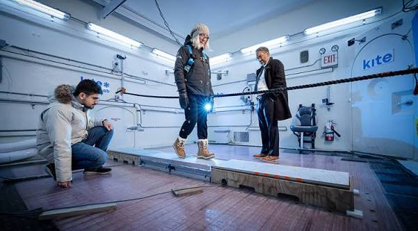

SOLIDWORKS
Mechanical CAD
SolidWorks · Fusion 360 · assemblies · mechanisms · 2D engineering drawings · component interfaces
Hi, I am
Mechanical Engineering @ University of Toronto · Test Engineering @ Trajekt Sports
I want to build things that are meaningful. I deliberately challenge myself with hard problems, learn fast, and look for teams where I can contribute early.
I’m especially drawn to startups working across robotics, sports technology, bioengineering, and human performance.

01
Testing real hardware, supporting research, and taking on new technical leadership.

JUN 2026 — PRESENT
Trajekt Sports
Mississauga, ON · Part-time
Test and validate robotic pitching systems through structured performance, repeatability, durability, and comparative hardware testing.
Open experience →



JUN 2025 — PRESENT
UHN · KITE Research Institute
Toronto, ON · Research
Support footwear slipperiness, fall-risk, and slip-detection research through experimental workflows, dataset preparation, and lab documentation.
Open experience →

SEP 2026 — PRESENT
UT BIOME
University of Toronto · Ongoing
An ongoing student design-team role focused on exploring neurotechnology directions and shaping an engineering project from its earliest stage.
Open experience →
02
Independent case studies with the design process, engineering evidence, CAD, and documentation kept together.
04
Tools matter. So do test discipline, documentation, and the decisions behind the design.
SolidWorks · Fusion 360 · assemblies · mechanisms · 2D engineering drawings · component interfaces
Test matrices · repeatability · endurance · calibration · root-cause analysis · failure tracking
Requirements · stakeholder analysis · concept generation · feasibility checks · Pugh charts · weighted decision matrices
Technical reports · design rationale · test plans · Gantt planning · revision control · final proofing · cross-team updates
MATLAB · Python · C/C++ · Excel · Minitab · data cleaning · modelling and simulation
I like building enough structure around a problem that a team can test it, discuss it, and improve it together.